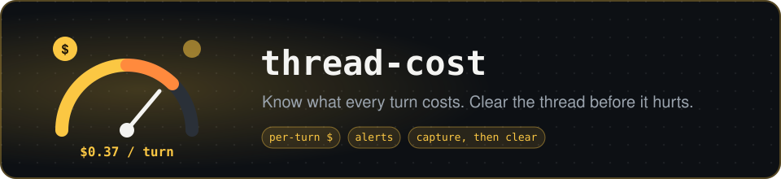

thread-cost

Shows what each agent turn costs and has the model write a handoff before a thread gets expensive.
A cost line after every reply, from the harness's own transcript.
Alerts every $5, and a capture block at $15 or a large context.
You clear the thread and continue from the handoff, so you stop paying for old context.
Quick start
Copy the folder to a place it will stay: install a skill.
Wire the hooks (
<skill>is this folder):python3 <skill>/scripts/thread_hooks_install.py --writeCheck it reads your session:
python3 <skill>/scripts/thread_cost_alert.py status
What's inside
| Script / file | What it does |
|---|---|
scripts/thread_cost_alert.py | Cost line, alerts, capture block; status / check / replay |
scripts/thread_idle_capture.py | Idle wake before the prompt cache lapses (Claude Code) |
scripts/thread_handoff.py | Records the handoff; resumes from it after /clear or /compact |
scripts/thread_hook_antigravity.py | Antigravity hook adapter |
scripts/thread_usage.py | Reads Claude Code, opencode, Codex and Antigravity sessions: time, tokens, cost |
scripts/model_prices.json | Price table (USD per million tokens, with an as_of date) |
scripts/thread_hooks_common.py | Shared config and state helpers |
scripts/thread_hooks_install.py | Wires, checks and removes the hooks |
How it works
Every request re-reads the whole conversation, so a long thread pays for its past on every step. The hooks read the transcript, estimate cost, and at a threshold ask the model to write a handoff. You then clear and continue from it.
What fires and when
| Trigger | Does |
|---|---|
| Every prompt | Gives the model last turn's cost to end the reply with (off with thread_turn_cost_line=0) |
| Every $5 | Alert on screen and to the model |
| Live context 200K | One on-screen note |
| $15 (then every $15), or context 300K (then every 100K) | Blocks the stop once with the capture instruction |
| Context 40K past the session start (then every 40K) | Same capture block; skipped for subagents |
SessionStart after clear or compact | Tells the new session to read the recorded handoff first |
| Resume after the cache lifetime on context over 100K | One-line note suggesting a handoff and a clear |
| 50 min idle (cost >= $1, context >= 60K) | Wakes the thread once to capture while the cache is warm |
Configuration keys
All optional. Environment wins, then ~/.config/thread-cost/config.env, then the default.
| Key | Default | Meaning |
|---|---|---|
thread_cost_alert_usd / thread_cost_alert_step_usd | 5 / 5 | first alert, then every step |
thread_cost_capture_usd / thread_cost_capture_step_usd | 15 / 15 | cost capture |
thread_ctx_capture_k / thread_ctx_step_k | 300 / 100 | context capture (K tokens) |
thread_ctx_growth_k | 40 | growth capture; 0 = off |
thread_idle_capture_min | 50 | idle wake; keep under the 1h cache TTL |
thread_turn_cost_line | 1 | 0 = no per-turn cost line |
thread_capture_step / thread_capture_step_file | built in | the capture step, as one line or a text file |
Full list: SKILL.md, Config.
Harness support
| Harness | Cost line, alerts, capture | Idle wake, resume after clear |
|---|---|---|
| Claude Code | automatic (hooks) | automatic |
| Antigravity | automatic once a conversation has token data | no |
| opencode, Codex, Cursor, a bare terminal | manual: run status at iteration boundaries | no |
Hooks and what they change
Claude Code: five hooks merged into
settings.json.Antigravity: one
thread-costhook inconfig/hooks.json, when~/.geminiexists.Your other hooks are kept and each file is backed up first.
Any hook failure prints nothing and exits 0, so a hook never breaks a turn.
Limits and safety
Cost is an API list-price estimate; a subscription bills differently, so read it as relative size.
Scripts are read-only towards the harness and use no network, except the optional Antigravity local server on 127.0.0.1.
State lives outside every repo.
Uninstall:
python3 <skill>/scripts/thread_hooks_install.py --uninstall --write, then delete the folder.
Files
SKILL.md: what the agent readsINSTALL.md: full install and uninstallconfig.example.env: every config key, commented
Part of agnostic-skills · MIT